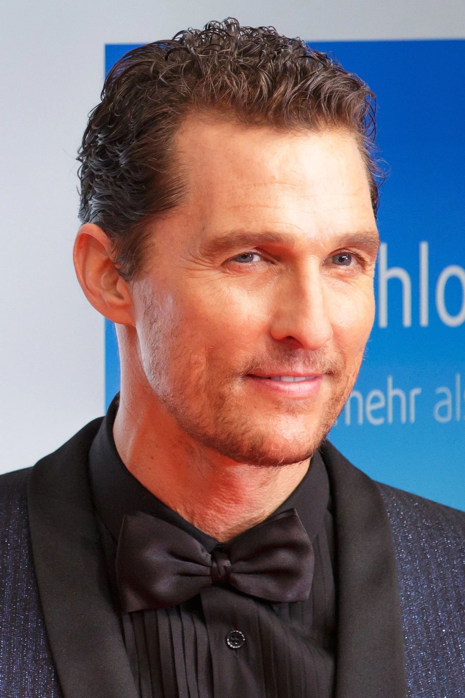
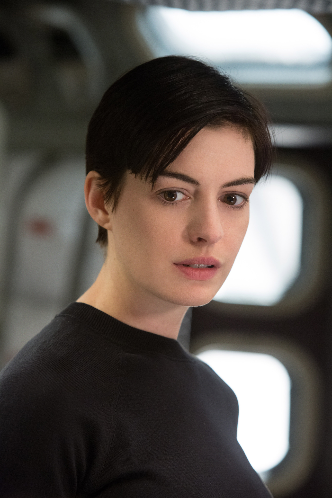
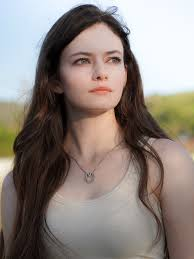
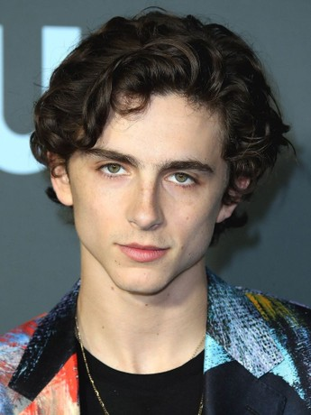
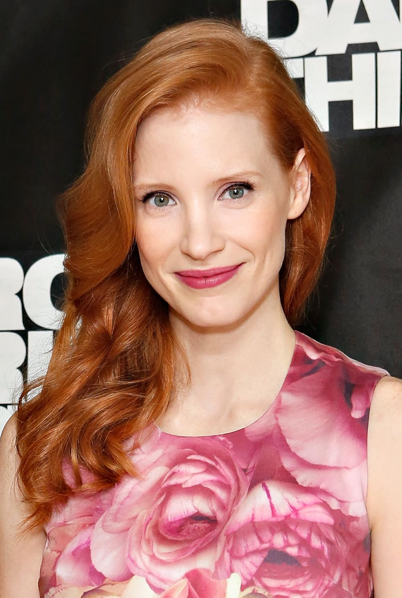
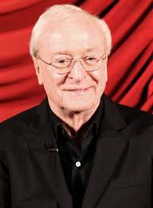
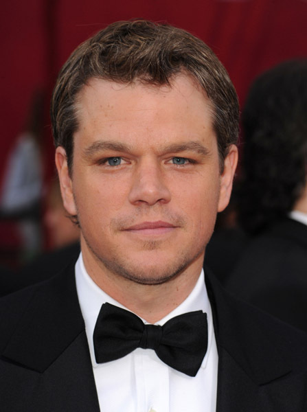

Interestelar
Cooper.
Brand.
Murph criança.
Tom.
Donald.
Murph adulta.
P.Brand.
Mann.
Voltar a pagina inicial.
Interestelar
Elenco
Matthew McConaughey (Cooper)

- Idade: 54 anos
- Nacionalidade: EUA
- Curiosidade: Vencedor do Oscar de Melhor Ator
Anne Hathaway (Brand)

- Idade: 42 anos
- Nacionalidade: EUA
- Curiosidade: Atua em diversos filmes de ficção e fantasia
Mackenzie Foy (Murph criança)

- Idade: 24 anos
- Nacionalidade: EUA
- Curiosidade: Ficou conhecida ao interpretar Renesmee em Amanhecer, da saga Crepúsculo. Também trabalhou como modelo infantil.
Timothée Chalamet (Tom jovem)

- Idade: 29 anos
- Nacionalidade: EUA (dupla nacionalidade com França)
- Curiosidade: Após Interestelar, se destacou em filmes como Me Chame Pelo Seu Nome e Duna.
John Lithgow (Donald – avô de Murph e Tom)

- Idade: 78 anos
- Nacionalidade: EUA 🇺🇸
- Curiosidade: Ator experiente, já ganhou prêmios como Emmy e Globo de Ouro. Atua em comédias e dramas com a mesma maestria.
Jessica Chastain (Murph adulta)

- Idade: 48 anos
- Nacionalidade: EUA
- Curiosidade: Grande atuação dramática no filme
Michael Caine (Professor Brand)

- Idade: 92 anos
- Nacionalidade: Reino Unido
- Curiosidade: Colabora frequentemente com Christopher Nolan
Matt Damon (Dr. Mann)

- Idade: 54 anos
- Nacionalidade: EUA
- Curiosidade: Sua participação foi surpresa no lançamento. É conhecido por papéis em Perdido em Marte, Gênio Indomável e Jason Bourne.
Todas as idades estão atualizadas 2025.
Voltar ao topo.